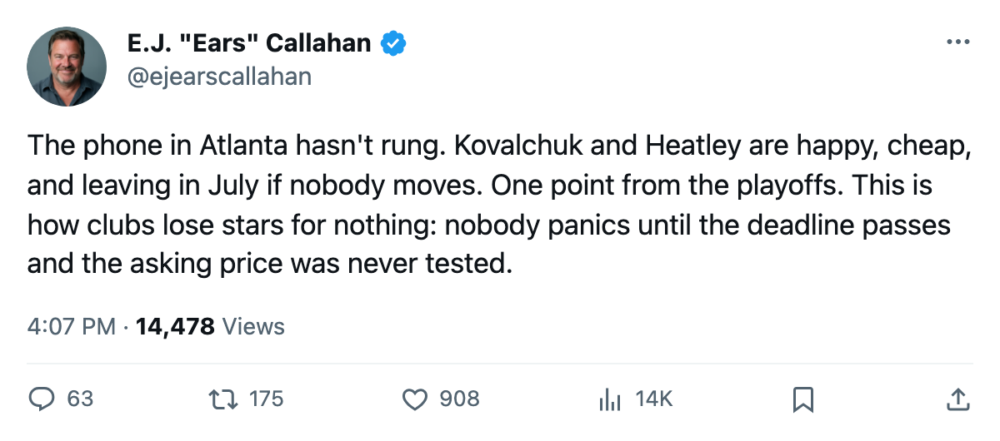
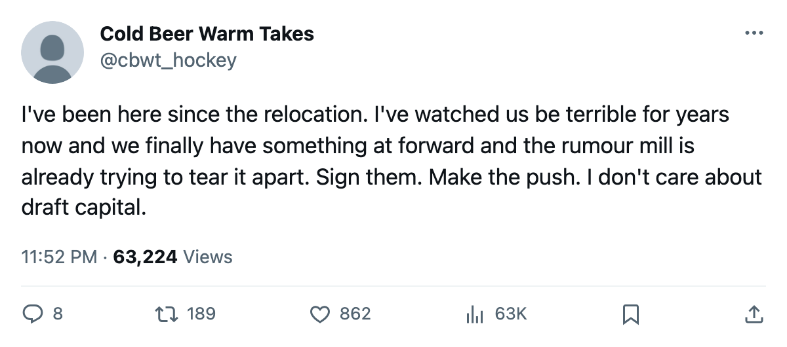

RUMOR METER: ATL Is 1 Point Back of the Playoffs. Both Its Young Stars Walk for Nothing in July. 🔥🔥
Kovalchuk and Heatley both carry 95 morale. Neither is making noise. Both are expiring.
 E.J. "Ears" CallahanInsider · The Hot Stove
E.J. "Ears" CallahanInsider · The Hot Stove

ATL's two expiring young stars, 1 point from the playoffs, with 23 days on the clock

 Atlanta Thrashers has 60 points.
Atlanta Thrashers has 60 points.  Buffalo Sabres has 61. The gap between Atlanta and the 8th playoff spot in the East is a single point, and the club sits on two expiring contracts that could buy the difference. The question the front office faces in the next 23 days: do you trade one of them and try to close the gap yourself, or do you keep both and gamble on July?
Buffalo Sabres has 61. The gap between Atlanta and the 8th playoff spot in the East is a single point, and the club sits on two expiring contracts that could buy the difference. The question the front office faces in the next 23 days: do you trade one of them and try to close the gap yourself, or do you keep both and gamble on July?
 Ilya Kovalchuk92, 21, carries 98 points in 59 games. His grade is 86. His cap number is $1.10M, his morale is 95, and his contract has one year left.
Ilya Kovalchuk92, 21, carries 98 points in 59 games. His grade is 86. His cap number is $1.10M, his morale is 95, and his contract has one year left.  Dany Heatley90, 24, has 91 points in 56 games, an 84 overall, the same $1.10M salary, and the same 95 morale. Two young wings, both productive, both cheap, both leaving unless someone signs them.
Dany Heatley90, 24, has 91 points in 56 games, an 84 overall, the same $1.10M salary, and the same 95 morale. Two young wings, both productive, both cheap, both leaving unless someone signs them.
The morale matters here more than it looks. A player at 72 or 74 makes noise. He asks for a trade. The front office has to move him or eat the discontent. At 95, Kovalchuk and Heatley are happy in Atlanta. Neither has given management a reason to call anybody. The league record shows no transaction involving either name, and league sources say the phones haven't rung hard yet either. That's what the Meadowlands whispers are about this morning: not that a deal is imminent, but that the window to get something for them narrows a little every week.
The business math behind the stall
Atlanta Thrashers runs a $36.79M payroll, second-lowest in the league behind Vancouver at $34.94M. Per point, Atlanta spends $0.61M. The club cleared $23.15M in profit last season. This is not a team that has to sell to stay afloat. They could re-sign both and absorb the raises, if the raise is modest enough. At 21 and 24, both players are likely to accept anything north of what they're making now.
The case against patience: the playoff race is real and thin. ATL is 1 point from the 8th spot with roughly 23 games left. If they miss again, and then watch one or both stars walk for nothing on July 28, the room that sits at 91.7 average morale across the roster is going to notice. That's 18th of 30 clubs, which is fine. It stops being fine when you lose two 90-point men for zero.
The case for patience: you are 1 point back. You don't trade your top two scorers 1 point from the playoffs. You sign them, you make the push, and you figure out what a playoff run looks like from the outside next October.
What a man who would know says: a club that is this close doesn't sell its top two scorers in February. But a different voice with the same proximity notes that every club that was this close last year and held its expirings either re-signed them at market value or watched them leave. Atlanta hasn't made that call yet.
A league source close to the situation says the two players have not requested trades. That's all the source will confirm, and the source is correct to stop there. What the calendar has as the trade deadline is March 19. What the calendar has as free agency closing is July 28. The next 23 days don't determine whether Kovalchuk and Heatley stay in Atlanta. But they determine whether Atlanta gets paid for them if they don't.
CONFIRMED vs. DENIED
The desk's own read: a deal involving Kovalchuk or Heatley before March 19 is unlikely but not impossible. The salary is too low, the production too high, and the playoff math too tight. League sources say both players are content. The desk will score this one against the record when the deadline passes.

